Where Life Expectancy Is Highest, and Why
Eleven visualizations, each testing one possible explanation for why life expectancy varies as much as it does.
1. The map: a 23-year gap that's slowly closing
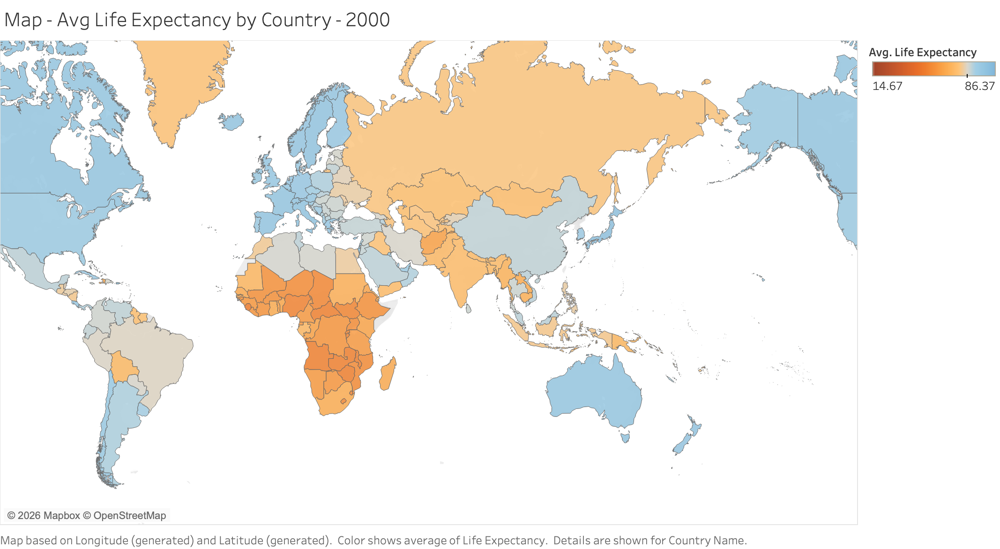
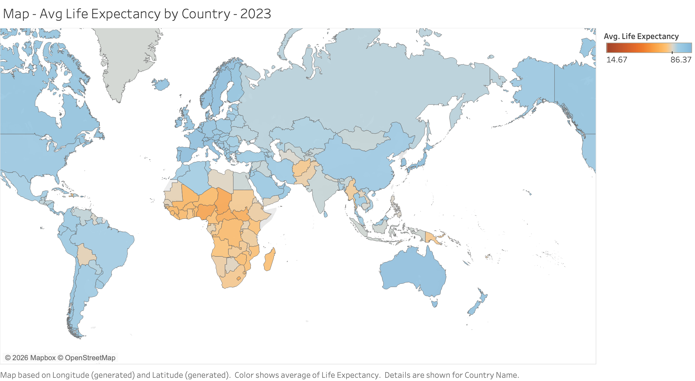
Between 2000 and 2023, most of the map shifts from orange to blue. Sub-Saharan Africa is the exception, it's still the deepest orange in 2023 that it was in 2000. That's actually why I picked the diverging palette with a fixed midpoint instead of a single-hue scale. On a sequential scale, "improvement" is just a slightly lighter shade of the same color, and I think I would've genuinely missed that one region wasn't moving if I hadn't switched it.
2. GDP per capita: a strong relationship, but not a straight one
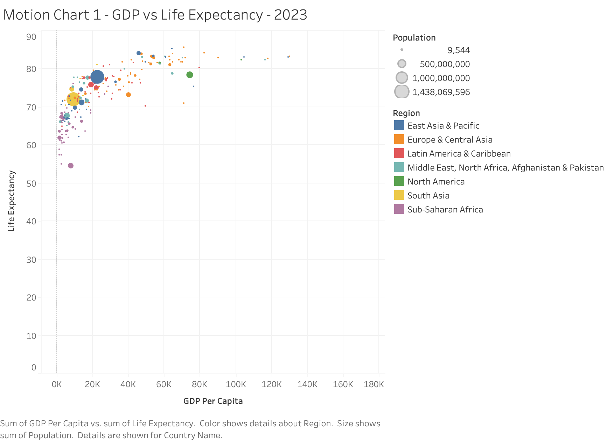
GDP per capita and life expectancy clearly move together, though not in a straight line the way I expected going in. The climb is steep from $0 to about $20K per capita, then it basically flattens, countries above roughly $40K all cluster somewhere around 80 to 85 years regardless of how much richer they get past that point. So money buys you a lot of life expectancy at the low end, and not much at all once a country is already rich.
3. Health spending: necessary, but far from sufficient
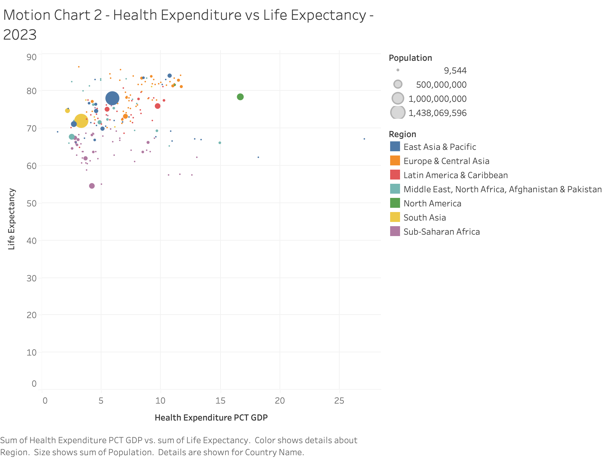
Of everything I tested, this was the messiest relationship by far, almost not a relationship at all. Some countries spend 15 to 20% of GDP on healthcare and are still sitting in the 60s and 70s for life expectancy. Others spend under 5% and land above 75. Spending share on its own just doesn't tell you much, probably because it says nothing about whether that money is actually spent well or where it's going.
4. Physicians per 1,000 people: a stronger, quieter driver
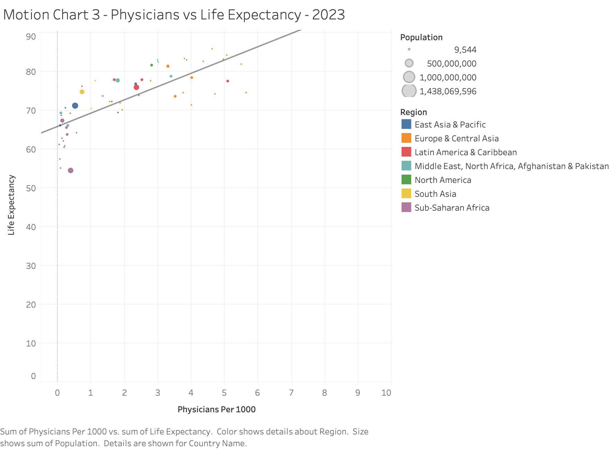
This is the variable I ended up going with after testing a few different candidates instead of just picking one. Physicians per 1,000 people tracks life expectancy noticeably more closely than health spending share does, the points sit much tighter around the trend line here than they did in Fig. 3. Put next to that chart, it suggests that how a country spends on healthcare, specifically whether it's building out its actual physician workforce, matters more than the raw percentage of GDP it puts toward health.
5. The regional gap, in one bar chart
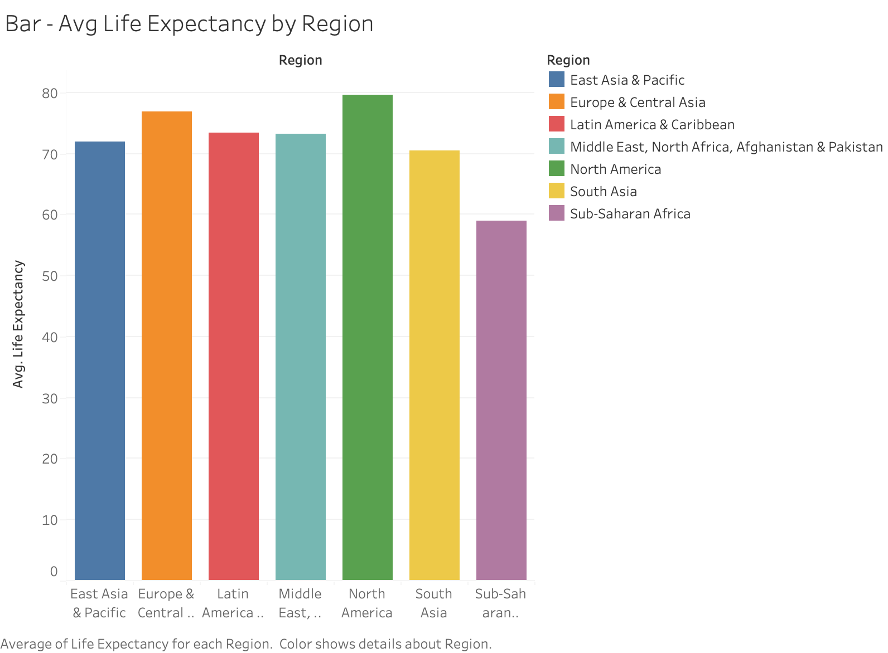
Sub-Saharan Africa has the lowest regional average at 58.97 years, North America has the highest at 79.63, a 20.7-year gap. But that regional number actually undersells things, the country-level spread is even bigger. Just in 2023, Monaco (86.4), San Marino (85.7), and Hong Kong (85.2) are at the top, and Nigeria (54.5), Chad (55.1), and Lesotho (57.4) are at the bottom. That's close to a 32-year gap between the highest and lowest life expectancy on the planet, in the same year.
6. Trends over time: steady progress, then a visible dip
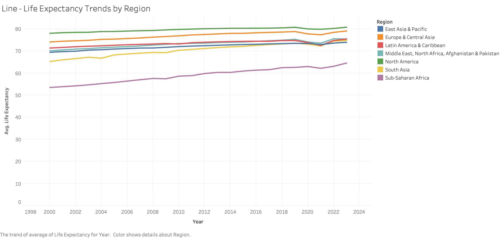
Every region trends upward over the full 23 years, global life expectancy goes from 67.6 in 2000 to 73.8 in 2023. But it's not a smooth line up. Nearly every region dips between 2019 and 2021 (global average drops from 73.0 to 71.8) before climbing back by 2022 and 2023. The timing obviously lines up with COVID, and it's a real dip in the data, not something I had to squint at the chart to convince myself was there.
Five more variables worth testing
Beyond physicians per 1,000, I pulled five more indicators from the World Bank's World Development Indicators: urban population share, internet use, unemployment, electricity access, and population density. None of these have the same full year-by-year coverage across all 215 countries that GDP, health expenditure, and physicians do, so instead of another animated motion chart, each one here is a single scatter against life expectancy using whatever the most recent available year is per country. Some of these turned out to matter a lot more than others.
7. Urban population share: a looser version of the GDP pattern
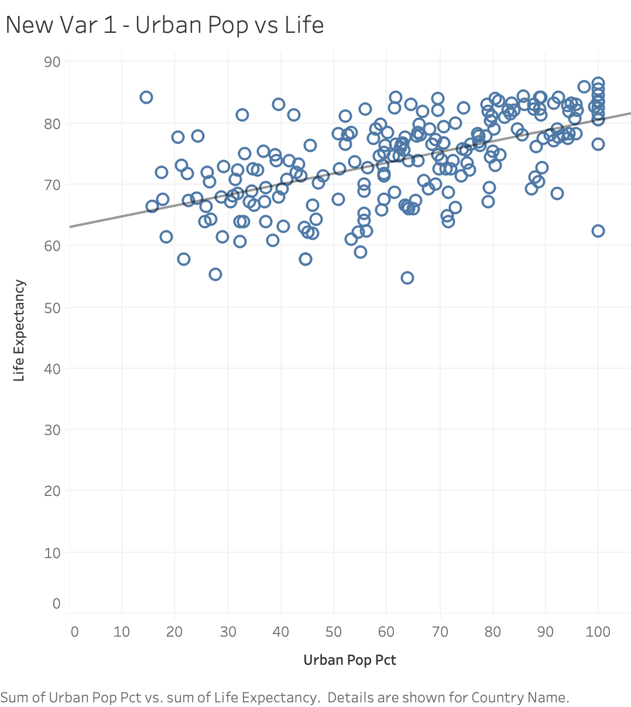
Countries with more of their population living in cities tend to have higher life expectancy, but it's a looser relationship than GDP's. Mostly rural countries cluster in the 60s. Highly urbanized ones are all over the place though, anywhere from the high 60s to the mid-80s. This tracks with development generally so I wasn't shocked, but it's still a real, visible pattern and not just noise.
8. Internet use: the tightest of the five new variables
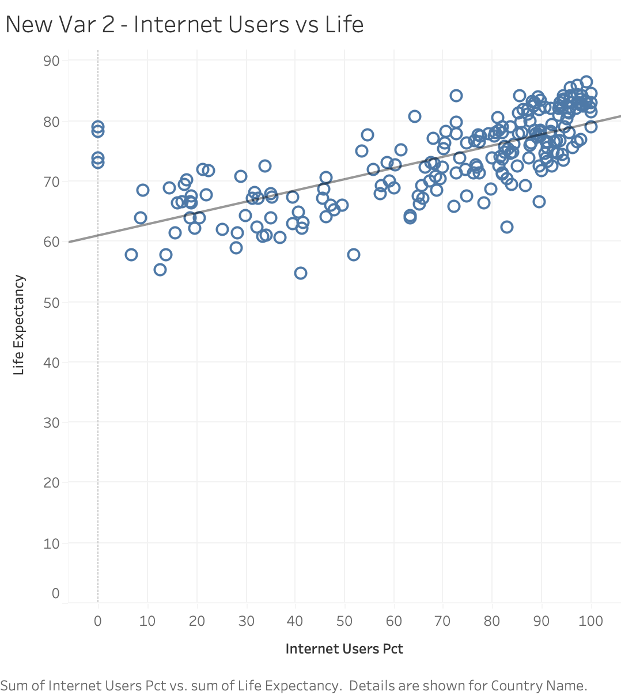
Out of the five, this one was the cleanest. Low-internet-use countries are almost all sitting in the 55-to-70 range, and life expectancy climbs pretty steadily as internet use goes up, topping out around 80 to 85 for the most connected countries. I don't think internet access itself is doing much of anything here, but my guess is it's mostly standing in for overall development and infrastructure. Either way, it's the closest fit of anything I tested besides GDP.
9. Unemployment: no real pattern
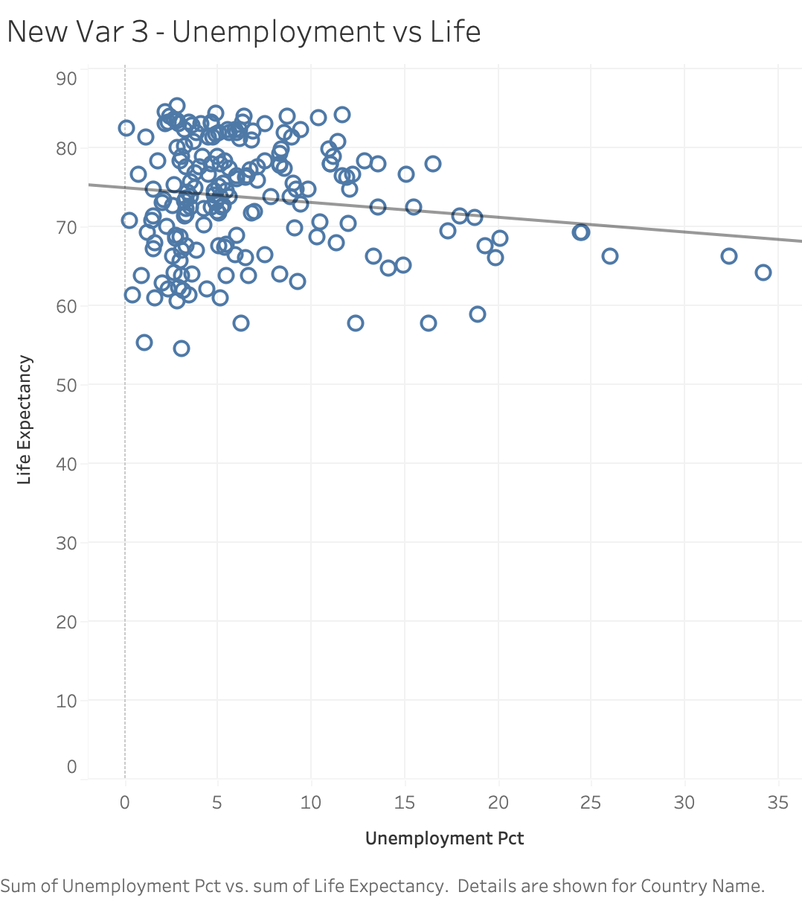
Unemployment turned out to be the weakest of the five, by a good margin. The points are scattered pretty evenly across the low-to-middle unemployment range no matter what life expectancy looks like, and the trend line is close to flat, if anything sloping slightly downward at the high end.
My best guess for why is that the official unemployment rate doesn't mean the same thing in every country. It's defined around people actively looking for formal work, so in lower-income countries with large informal economies, people who can't find a job often aren't counted as unemployed at all. They're doing informal or subsistence work instead, which keeps the official rate low without meaning the economy is actually healthy. Meanwhile, wealthy countries with strong labor protections and unemployment benefits can carry a moderate unemployment rate as a completely normal, structural feature of the economy rather than a sign anything's wrong. There's also a timescale mismatch: unemployment moves with the business cycle and can swing within a year or two, while life expectancy reflects decades of accumulated healthcare infrastructure. A single snapshot year of unemployment is really just picking up wherever a country happens to be in its business cycle, not some stable underlying trait the way GDP or internet use are. Put those two things together and the washed-out relationship makes more sense.
10. Electricity access: strong, but with a ceiling effect
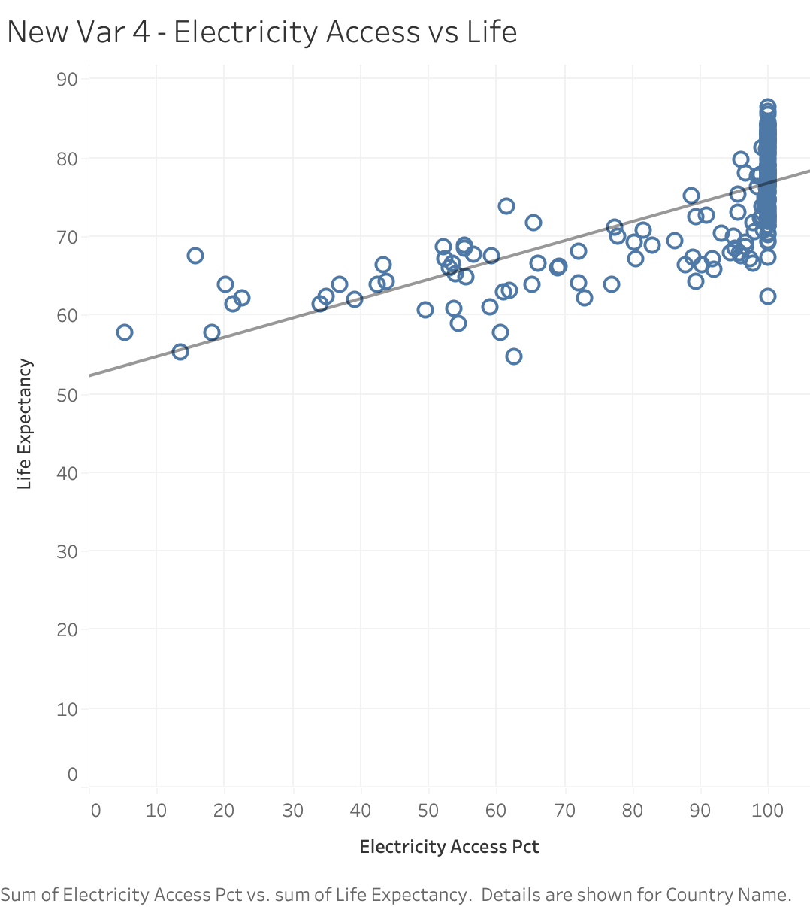
Most countries here already have universal or close to universal electricity access, so most of the actual variation is packed into a small slice of the scale, the low end. Where access is still incomplete, life expectancy is consistently lower. But once a country clears that bar, the countries sitting at 100% access still span a huge range, anywhere from the 60s to the high 80s. So electricity access looks more like a floor you need to clear than something that predicts much once you have.
11. Population density: a weaker relationship once the scale is fixed
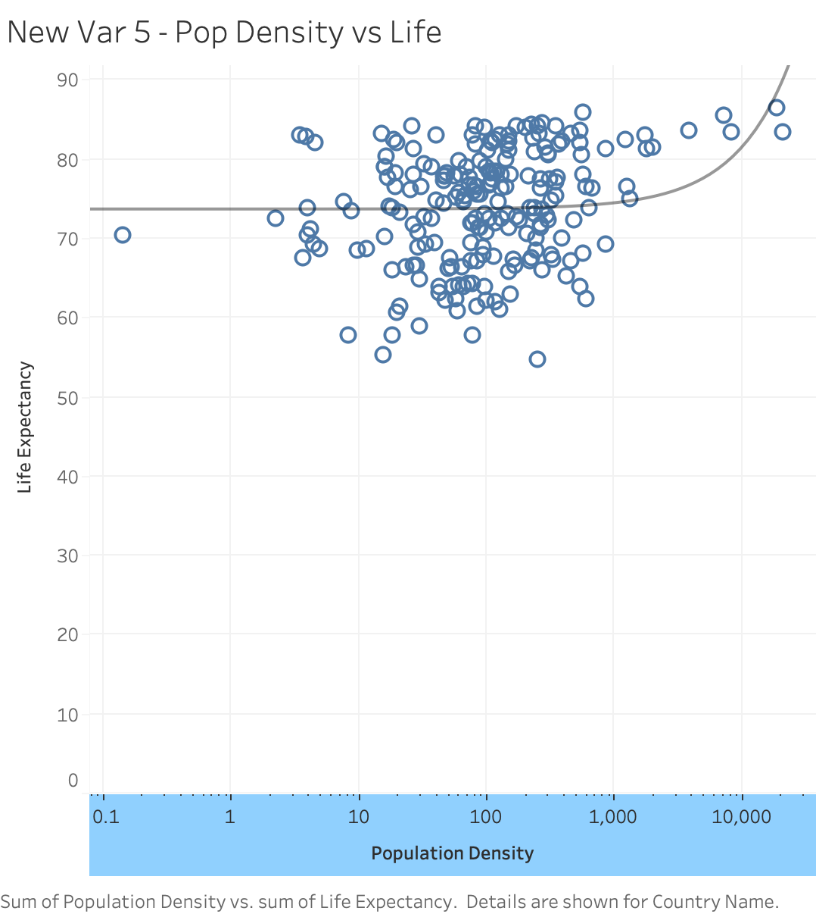
A handful of outliers, Monaco and Singapore especially, are so much denser than everywhere else that the chart is unreadable without switching to a log scale. Once it's rescaled there's a mild upward trend, but it's noisy, nowhere close to as clean as GDP or internet use.
I think the problem is that density is measuring two different things depending on which country you look at, and they pull in opposite directions. Tiny wealthy city-states like Monaco and Singapore are extremely dense, mostly because they have almost no land area to spread out over, not because of anything about how they're run, and they also happen to have some of the highest life expectancies in the dataset. On the other end, dense, overcrowded urban areas in lower-income countries can come with real health costs, poor sanitation, disease spread, strain on infrastructure. So "high density" describes both a Singapore high-rise and an overcrowded informal settlement, and those two things have nothing in common health-wise. A lot of what density is actually capturing here is just how small a country's land area is, which is basically a geographic accident rather than a development indicator the way urbanization or internet access are. That's probably why it comes out so much weaker and noisier than the other variables tested here.